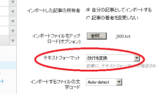
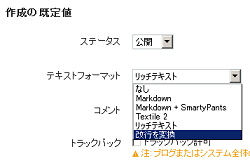
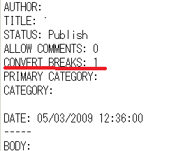
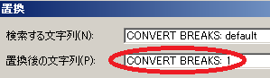

ＭＴ形式でインポートした記事の改行が反映されない
かれこれ５年ほど更新していたブログがあるのですが、運営元が閉鎖になるようなんで、独自ドメインを取得してmovable typeに引越すことにしました。そして、ＭＴ形式で記事をもらってインポートしてみたのですが、どうも改行が反映されないようなんです。
まず、このＭＴへインポートする際、「改行を変換する」の設定があると思うのですが、こちらを設定してインポートしても改行が反映されません。

そこで、本体の「設定 - 投稿」の箇所でも改行を反映するに設定してインポートしてみたのですが、やはりこちらでもだめでした。

そこでmovable typeのヘルプを参照してみたところ、インポートする元記事の「CONVERT BREAKS:」の箇所が改行を設定する箇所にあたるようなのです。
それでもらったＭＴ形式のテキストファイルの中身を確認してみたところ、この「CONVERT BREAKS:」がdefaultという値になっていたため、これを改行に変換する設定の「1」に書き直してインポートしてみたところ、無事、改行が反映されるようになりました。

やり方は、もらったMT形式のファイルをメモ帳で開いて、「編集 - 置換」をクリックし、この「default」の箇所を全部「1」に一括で置換して保存、それをインポートして再構築すると解決できるかと思います。

この「CONVERT BREAKS:」は「0」だと改行なし、「1」のときに改行が反映される仕組みのようです。無料ブログなどからＭＴ形式でエクスポートする際、この箇所を確認してみて、もし「0」とか「default」のような値になっていたら、「1」に書き直して対処するとよいでしょう。
ちなみに、その５年間更新していたブログなのですが、インデックス状況を確認してみると、ゼロ件で１記事もヒットしなかったようです。
主に、株関連で人気銘柄の需給を正確に計算してみたりといった情報を更新していたのですが、アクセス数がゼロのまま５年間もずっと更新していたようなのです。
てっきり、１日10人ぐらいのアクセスはあるんじゃないかなーと思っていたのですが、なんだかがっかりしてしまいました。
もちろん、コンテンツの質が低いというのはあるとは思いますが、やはり無料ブログサービスにもいろいろあって、それぞれにインデックスされやすいとか、されにくいとかの違いはあるものと思います。
もし、一番最初の段階で違う無料ブログサービスを選択していたら、たぶん、この５年間でけっこうなアクセス数が発生していたような気がいたします。
そういった意味で、一番最初のブログサービス選びというのは、「ま、これでいいっか。」みたいに気軽に選ぶのではなく、慎重に選んだ方がよさそうですね。